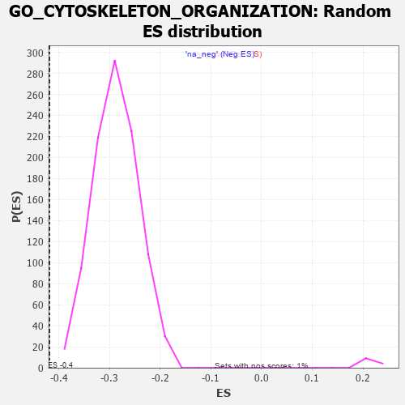

| | | Dataset | 7d |
| Phenotype | NoPhenotypeAvailable |
| Upregulated in class | na_neg |
| GeneSet | GO_CYTOSKELETON_ORGANIZATION |
| Enrichment Score (ES) | -0.41874933 |
| Normalized Enrichment Score (NES) | -1.4576436 |
| Nominal p-value | 0.0 |
| FDR q-value | 0.23564303 |
| FWER p-Value | 1.0 |
Table: GSEA Results Summary
 Fig 1: Enrichment plot: GO_CYTOSKELETON_ORGANIZATION
Fig 1: Enrichment plot: GO_CYTOSKELETON_ORGANIZATION
Profile of the Running ES Score & Positions of GeneSet Members on the Rank Ordered List
| PROBE | GENE SYMBOL | GENE_TITLE | RANK IN GENE LIST | RANK METRIC SCORE | RUNNING ES | CORE ENRICHMENT | | 1 | TGFB3 | | | 49 | 2.654 | 0.0089 | No |
| 2 | MAST2 | | | 59 | 2.459 | 0.0219 | No |
| 3 | RAC2 | | | 60 | 2.442 | 0.0359 | No |
| 4 | CSRP3 | | | 161 | 1.186 | 0.0297 | No |
| 5 | TPPP3 | | | 195 | 1.079 | 0.0316 | No |
| 6 | RHOU | | | 210 | 1.031 | 0.0357 | No |
| 7 | RHOH | | | 228 | 0.987 | 0.0392 | No |
| 8 | FSCN1 | | | 297 | 0.830 | 0.0351 | No |
| 9 | MLH1 | | | 423 | 0.679 | 0.0227 | No |
| 10 | LRP1 | | | 470 | 0.648 | 0.0204 | No |
| 11 | ZMYM3 | | | 475 | 0.646 | 0.0236 | No |
| 12 | CDC20 | | | 480 | 0.644 | 0.0268 | No |
| 13 | KIF23 | | | 522 | 0.622 | 0.0250 | No |
| 14 | SRF | | | 542 | 0.615 | 0.0261 | No |
| 15 | CCNB1 | | | 581 | 0.601 | 0.0246 | No |
| 16 | NDC80 | | | 616 | 0.590 | 0.0235 | No |
| 17 | AURKC | | | 633 | 0.583 | 0.0248 | No |
| 18 | ID1 | | | 719 | 0.555 | 0.0169 | No |
| 19 | SETD3 | | | 754 | 0.544 | 0.0156 | No |
| 20 | RAE1 | | | 827 | 0.524 | 0.0092 | No |
| 21 | PTPA | | | 947 | 0.497 | -0.0034 | No |
| 22 | ZPR1 | | | 967 | 0.491 | -0.0031 | No |
| 23 | RCC1 | | | 1043 | 0.475 | -0.0102 | No |
| 24 | MEF2C | | | 1054 | 0.473 | -0.0087 | No |
| 25 | FZD10 | | | 1065 | 0.470 | -0.0073 | No |
| 26 | STAG2 | | | 1069 | 0.470 | -0.0050 | No |
| 27 | CDK10 | | | 1092 | 0.465 | -0.0052 | No |
| 28 | MYO1D | | | 1099 | 0.464 | -0.0033 | No |
| 29 | SRC | | | 1128 | 0.459 | -0.0043 | No |
| 30 | NCK2 | | | 1131 | 0.458 | -0.0020 | No |
| 31 | VPS54 | | | 1148 | 0.454 | -0.0014 | No |
| 32 | MTSS1 | | | 1149 | 0.454 | 0.0012 | No |
| 33 | GAB1 | | | 1158 | 0.453 | 0.0027 | No |
| 34 | CRIPT | | | 1185 | 0.449 | 0.0019 | No |
| 35 | CHD3 | | | 1232 | 0.442 | -0.0015 | No |
| 36 | TBCD | | | 1338 | 0.422 | -0.0128 | No |
| 37 | KPTN | | | 1341 | 0.422 | -0.0106 | No |
| 38 | FKBP4 | | | 1390 | 0.412 | -0.0145 | No |
| 39 | DOCK7 | | | 1398 | 0.410 | -0.0131 | No |
| 40 | E2F4 | | | 1501 | 0.390 | -0.0241 | No |
| 41 | SON | | | 1538 | 0.385 | -0.0266 | No |
| 42 | BIRC8 | | | 1615 | 0.372 | -0.0344 | No |
| 43 | DRG1 | | | 1633 | 0.368 | -0.0345 | No |
| 44 | TPPP | | | 1646 | 0.365 | -0.0340 | No |
| 45 | TPX2 | | | 1708 | 0.355 | -0.0399 | No |
| 46 | ESPL1 | | | 1734 | 0.349 | -0.0411 | No |
| 47 | ABR | | | 1812 | 0.335 | -0.0492 | No |
| 48 | UVRAG | | | 1831 | 0.332 | -0.0497 | No |
| 49 | SMAD4 | | | 1860 | 0.326 | -0.0515 | No |
| 50 | NUP62 | | | 1871 | 0.324 | -0.0509 | No |
| 51 | PAK3 | | | 1889 | 0.322 | -0.0513 | No |
| 52 | CUL3 | | | 1893 | 0.321 | -0.0498 | No |
| 53 | FMNL2 | | | 1946 | 0.314 | -0.0548 | No |
| 54 | ZW10 | | | 1973 | 0.309 | -0.0564 | No |
| 55 | BRSK2 | | | 1979 | 0.308 | -0.0553 | No |
| 56 | DCTN6 | | | 1999 | 0.305 | -0.0560 | No |
| 57 | RAF1 | | | 2011 | 0.303 | -0.0557 | No |
| 58 | CENPE | | | 2086 | 0.293 | -0.0637 | No |
| 59 | INO80 | | | 2120 | 0.288 | -0.0663 | No |
| 60 | CCDC6 | | | 2222 | 0.273 | -0.0779 | No |
| 61 | CDK2 | | | 2226 | 0.272 | -0.0767 | No |
| 62 | WTIP | | | 2228 | 0.272 | -0.0753 | No |
| 63 | WASF1 | | | 2303 | 0.259 | -0.0835 | No |
| 64 | BCAS3 | | | 2352 | 0.253 | -0.0883 | No |
| 65 | CLIP4 | | | 2391 | 0.247 | -0.0918 | No |
| 66 | MET | | | 2430 | 0.240 | -0.0954 | No |
| 67 | KAT2B | | | 2502 | 0.226 | -0.1033 | No |
| 68 | VPS4A | | | 2654 | 0.205 | -0.1219 | No |
| 69 | SLIT2 | | | 2724 | 0.195 | -0.1297 | No |
| 70 | TTLL1 | | | 2764 | 0.189 | -0.1337 | No |
| 71 | FER | | | 2803 | 0.183 | -0.1376 | No |
| 72 | BRK1 | | | 2805 | 0.183 | -0.1367 | No |
| 73 | DAPK3 | | | 2880 | 0.169 | -0.1454 | No |
| 74 | MTM1 | | | 2893 | 0.168 | -0.1460 | No |
| 75 | XPO1 | | | 2960 | 0.156 | -0.1537 | No |
| 76 | KIF4B | | | 2965 | 0.155 | -0.1533 | No |
| 77 | ULK4 | | | 3022 | 0.146 | -0.1598 | No |
| 78 | WNT4 | | | 3023 | 0.146 | -0.1590 | No |
| 79 | BRCA2 | | | 3024 | 0.146 | -0.1581 | No |
| 80 | TLN1 | | | 3030 | 0.145 | -0.1579 | No |
| 81 | MARK3 | | | 3031 | 0.145 | -0.1571 | No |
| 82 | MAEA | | | 3048 | 0.143 | -0.1584 | No |
| 83 | MAP2 | | | 3074 | 0.140 | -0.1608 | No |
| 84 | CHP1 | | | 3089 | 0.138 | -0.1619 | No |
| 85 | PAX6 | | | 3170 | 0.127 | -0.1716 | No |
| 86 | TWF1 | | | 3199 | 0.123 | -0.1745 | No |
| 87 | SMAD3 | | | 3303 | 0.105 | -0.1873 | No |
| 88 | FMN1 | | | 3363 | 0.095 | -0.1945 | No |
| 89 | GMFB | | | 3381 | 0.091 | -0.1962 | No |
| 90 | GAS2 | | | 3392 | 0.090 | -0.1970 | No |
| 91 | TESK2 | | | 3401 | 0.089 | -0.1975 | No |
| 92 | EHBP1 | | | 3419 | 0.087 | -0.1992 | No |
| 93 | CDK5 | | | 3480 | 0.080 | -0.2066 | No |
| 94 | SYNM | | | 3498 | 0.078 | -0.2084 | No |
| 95 | FES | | | 3501 | 0.077 | -0.2082 | No |
| 96 | HDAC3 | | | 3528 | 0.072 | -0.2111 | No |
| 97 | PARD3 | | | 3584 | 0.063 | -0.2180 | No |
| 98 | MAPK3 | | | 3589 | 0.062 | -0.2181 | No |
| 99 | SBDS | | | 3640 | 0.053 | -0.2243 | No |
| 100 | SMC3 | | | 3701 | 0.042 | -0.2319 | No |
| 101 | NF1 | | | 3713 | 0.040 | -0.2331 | No |
| 102 | FMNL3 | | | 3739 | 0.036 | -0.2362 | No |
| 103 | CEP19 | | | 3778 | 0.031 | -0.2410 | No |
| 104 | SPAST | | | 3801 | 0.027 | -0.2437 | No |
| 105 | WDR47 | | | 3823 | 0.023 | -0.2463 | No |
| 106 | PRC1 | | | 3841 | 0.021 | -0.2484 | No |
| 107 | XIRP2 | | | 3854 | 0.020 | -0.2498 | No |
| 108 | NEK2 | | | 3871 | 0.016 | -0.2518 | No |
| 109 | NCOR1 | | | 3961 | 0.000 | -0.2634 | No |
| 110 | TOR1A | | | 4030 | -0.013 | -0.2722 | No |
| 111 | MCPH1 | | | 4039 | -0.014 | -0.2732 | No |
| 112 | ACTN1 | | | 4050 | -0.016 | -0.2744 | No |
| 113 | MTOR | | | 4114 | -0.025 | -0.2825 | No |
| 114 | ABL1 | | | 4125 | -0.027 | -0.2836 | No |
| 115 | PLCE1 | | | 4127 | -0.028 | -0.2836 | No |
| 116 | CRK | | | 4139 | -0.031 | -0.2848 | No |
| 117 | MZT1 | | | 4145 | -0.032 | -0.2853 | No |
| 118 | ARPC2 | | | 4232 | -0.047 | -0.2963 | No |
| 119 | TBCEL | | | 4241 | -0.049 | -0.2970 | No |
| 120 | ARL2 | | | 4254 | -0.050 | -0.2983 | No |
| 121 | WNT11 | | | 4282 | -0.056 | -0.3015 | No |
| 122 | RAN | | | 4299 | -0.059 | -0.3032 | No |
| 123 | BAG4 | | | 4314 | -0.061 | -0.3047 | No |
| 124 | RALA | | | 4416 | -0.079 | -0.3174 | No |
| 125 | SETD2 | | | 4443 | -0.084 | -0.3203 | No |
| 126 | KIF3B | | | 4450 | -0.085 | -0.3206 | No |
| 127 | SPAG1 | | | 4453 | -0.085 | -0.3204 | No |
| 128 | FRMD5 | | | 4455 | -0.085 | -0.3200 | No |
| 129 | EPS8 | | | 4474 | -0.088 | -0.3219 | No |
| 130 | HIP1 | | | 4485 | -0.092 | -0.3227 | No |
| 131 | MEF2A | | | 4499 | -0.095 | -0.3238 | No |
| 132 | MOB2 | | | 4504 | -0.095 | -0.3238 | No |
| 133 | ILK | | | 4510 | -0.096 | -0.3239 | No |
| 134 | ABI2 | | | 4554 | -0.106 | -0.3289 | No |
| 135 | APC | | | 4558 | -0.107 | -0.3287 | No |
| 136 | NISCH | | | 4568 | -0.109 | -0.3292 | No |
| 137 | SMC1A | | | 4609 | -0.120 | -0.3337 | No |
| 138 | ARPC3 | | | 4659 | -0.129 | -0.3394 | No |
| 139 | CHMP3 | | | 4660 | -0.129 | -0.3386 | No |
| 140 | LIMK1 | | | 4684 | -0.136 | -0.3409 | No |
| 141 | PTK7 | | | 4687 | -0.136 | -0.3403 | No |
| 142 | ARF6 | | | 4704 | -0.140 | -0.3416 | No |
| 143 | DCX | | | 4721 | -0.143 | -0.3429 | No |
| 144 | CNN1 | | | 4727 | -0.144 | -0.3427 | No |
| 145 | WASF3 | | | 4730 | -0.145 | -0.3421 | No |
| 146 | POC1A | | | 4768 | -0.151 | -0.3461 | No |
| 147 | MYO5A | | | 4787 | -0.155 | -0.3475 | No |
| 148 | PCLO | | | 4793 | -0.156 | -0.3473 | No |
| 149 | FLII | | | 4795 | -0.156 | -0.3465 | No |
| 150 | TPPP2 | | | 4800 | -0.157 | -0.3461 | No |
| 151 | TNIK | | | 4804 | -0.158 | -0.3456 | No |
| 152 | CEP97 | | | 4812 | -0.160 | -0.3456 | No |
| 153 | WDR1 | | | 4824 | -0.163 | -0.3461 | No |
| 154 | CNN2 | | | 4828 | -0.163 | -0.3456 | No |
| 155 | BIN3 | | | 4832 | -0.165 | -0.3450 | No |
| 156 | DLG1 | | | 4860 | -0.169 | -0.3476 | No |
| 157 | TBCE | | | 4862 | -0.170 | -0.3467 | No |
| 158 | MARK2 | | | 4899 | -0.177 | -0.3504 | No |
| 159 | CAPZB | | | 4908 | -0.179 | -0.3504 | No |
| 160 | ATRX | | | 4929 | -0.184 | -0.3519 | No |
| 161 | TBCK | | | 4937 | -0.186 | -0.3518 | No |
| 162 | CAP2 | | | 4943 | -0.186 | -0.3514 | No |
| 163 | CHMP5 | | | 4952 | -0.188 | -0.3513 | No |
| 164 | ARAP1 | | | 4963 | -0.191 | -0.3515 | No |
| 165 | PDPK1 | | | 5043 | -0.207 | -0.3607 | No |
| 166 | FLNB | | | 5082 | -0.220 | -0.3643 | No |
| 167 | DCTN2 | | | 5175 | -0.243 | -0.3749 | No |
| 168 | HDAC6 | | | 5183 | -0.244 | -0.3745 | No |
| 169 | PARVA | | | 5187 | -0.245 | -0.3734 | No |
| 170 | GPSM2 | | | 5228 | -0.252 | -0.3772 | No |
| 171 | SSH1 | | | 5254 | -0.258 | -0.3790 | No |
| 172 | CDK1 | | | 5264 | -0.262 | -0.3786 | No |
| 173 | PICK1 | | | 5265 | -0.263 | -0.3771 | No |
| 174 | FAT1 | | | 5281 | -0.267 | -0.3776 | No |
| 175 | CEP70 | | | 5282 | -0.267 | -0.3760 | No |
| 176 | ELMO2 | | | 5341 | -0.283 | -0.3820 | No |
| 177 | EPHA1 | | | 5349 | -0.285 | -0.3812 | No |
| 178 | KIF19 | | | 5392 | -0.294 | -0.3850 | No |
| 179 | PLK4 | | | 5397 | -0.295 | -0.3838 | No |
| 180 | LATS1 | | | 5412 | -0.298 | -0.3840 | No |
| 181 | FRMD3 | | | 5465 | -0.311 | -0.3889 | No |
| 182 | KIF3A | | | 5480 | -0.313 | -0.3890 | No |
| 183 | STIL | | | 5483 | -0.314 | -0.3874 | No |
| 184 | CEP76 | | | 5485 | -0.315 | -0.3857 | No |
| 185 | KIF2A | | | 5511 | -0.322 | -0.3871 | No |
| 186 | NDE1 | | | 5578 | -0.339 | -0.3938 | No |
| 187 | TTC17 | | | 5589 | -0.341 | -0.3931 | No |
| 188 | ASPM | | | 5637 | -0.358 | -0.3972 | No |
| 189 | MTCL1 | | | 5697 | -0.374 | -0.4028 | No |
| 190 | TTBK2 | | | 5700 | -0.376 | -0.4009 | No |
| 191 | PDCL3 | | | 5738 | -0.388 | -0.4035 | No |
| 192 | BBS4 | | | 5806 | -0.407 | -0.4099 | No |
| 193 | RAB13 | | | 5870 | -0.425 | -0.4156 | No |
| 194 | ARPC4 | | | 5886 | -0.430 | -0.4151 | No |
| 195 | SUN2 | | | 5893 | -0.433 | -0.4134 | No |
| 196 | CAP1 | | | 5935 | -0.447 | -0.4162 | Yes |
| 197 | DCTN1 | | | 5950 | -0.454 | -0.4154 | Yes |
| 198 | AGFG1 | | | 5955 | -0.457 | -0.4133 | Yes |
| 199 | ACTN2 | | | 5960 | -0.458 | -0.4112 | Yes |
| 200 | CNTRL | | | 5961 | -0.459 | -0.4085 | Yes |
| 201 | CENPJ | | | 5968 | -0.460 | -0.4067 | Yes |
| 202 | TPM2 | | | 5970 | -0.460 | -0.4041 | Yes |
| 203 | GCC2 | | | 5994 | -0.470 | -0.4044 | Yes |
| 204 | JMY | | | 6023 | -0.479 | -0.4053 | Yes |
| 205 | CKAP5 | | | 6032 | -0.482 | -0.4036 | Yes |
| 206 | RAC1 | | | 6036 | -0.484 | -0.4012 | Yes |
| 207 | ADD2 | | | 6046 | -0.487 | -0.3996 | Yes |
| 208 | EVL | | | 6052 | -0.490 | -0.3974 | Yes |
| 209 | CALR | | | 6077 | -0.499 | -0.3977 | Yes |
| 210 | PLK1 | | | 6082 | -0.500 | -0.3953 | Yes |
| 211 | DBNL | | | 6084 | -0.501 | -0.3926 | Yes |
| 212 | TACC2 | | | 6130 | -0.514 | -0.3955 | Yes |
| 213 | GBA2 | | | 6136 | -0.515 | -0.3932 | Yes |
| 214 | TNKS | | | 6138 | -0.516 | -0.3903 | Yes |
| 215 | ROCK1 | | | 6152 | -0.520 | -0.3890 | Yes |
| 216 | PARVB | | | 6168 | -0.528 | -0.3880 | Yes |
| 217 | MYO1E | | | 6200 | -0.537 | -0.3889 | Yes |
| 218 | TPM1 | | | 6226 | -0.545 | -0.3890 | Yes |
| 219 | CDC42 | | | 6236 | -0.548 | -0.3871 | Yes |
| 220 | SVIL | | | 6259 | -0.558 | -0.3867 | Yes |
| 221 | DRC1 | | | 6278 | -0.565 | -0.3858 | Yes |
| 222 | TLN2 | | | 6297 | -0.574 | -0.3849 | Yes |
| 223 | ARMC2 | | | 6363 | -0.602 | -0.3899 | Yes |
| 224 | BBS2 | | | 6383 | -0.608 | -0.3889 | Yes |
| 225 | TTLL6 | | | 6422 | -0.629 | -0.3902 | Yes |
| 226 | CETN3 | | | 6440 | -0.636 | -0.3887 | Yes |
| 227 | RTTN | | | 6497 | -0.659 | -0.3923 | Yes |
| 228 | SMTN | | | 6510 | -0.666 | -0.3900 | Yes |
| 229 | TRPV4 | | | 6515 | -0.668 | -0.3867 | Yes |
| 230 | KANK1 | | | 6536 | -0.678 | -0.3854 | Yes |
| 231 | TTLL5 | | | 6574 | -0.696 | -0.3862 | Yes |
| 232 | CLN3 | | | 6580 | -0.699 | -0.3828 | Yes |
| 233 | ARF1 | | | 6583 | -0.701 | -0.3790 | Yes |
| 234 | ALMS1 | | | 6590 | -0.704 | -0.3758 | Yes |
| 235 | TPR | | | 6597 | -0.709 | -0.3725 | Yes |
| 236 | TTLL9 | | | 6657 | -0.743 | -0.3759 | Yes |
| 237 | CLIP1 | | | 6667 | -0.746 | -0.3728 | Yes |
| 238 | CATIP | | | 6690 | -0.756 | -0.3713 | Yes |
| 239 | PAK1 | | | 6691 | -0.757 | -0.3669 | Yes |
| 240 | GSK3B | | | 6719 | -0.768 | -0.3661 | Yes |
| 241 | TTLL7 | | | 6736 | -0.778 | -0.3637 | Yes |
| 242 | C2CD3 | | | 6783 | -0.802 | -0.3650 | Yes |
| 243 | SPEF1 | | | 6801 | -0.815 | -0.3626 | Yes |
| 244 | FHOD3 | | | 6835 | -0.834 | -0.3621 | Yes |
| 245 | CEP72 | | | 6846 | -0.839 | -0.3586 | Yes |
| 246 | TTLL3 | | | 6857 | -0.845 | -0.3550 | Yes |
| 247 | NINL | | | 6869 | -0.851 | -0.3515 | Yes |
| 248 | FHL3 | | | 6887 | -0.860 | -0.3488 | Yes |
| 249 | PLEC | | | 6892 | -0.864 | -0.3444 | Yes |
| 250 | MYH11 | | | 6905 | -0.870 | -0.3409 | Yes |
| 251 | ESPN | | | 6911 | -0.873 | -0.3365 | Yes |
| 252 | GHSR | | | 6937 | -0.894 | -0.3347 | Yes |
| 253 | NPHP4 | | | 6991 | -0.931 | -0.3362 | Yes |
| 254 | MYH10 | | | 7048 | -0.966 | -0.3380 | Yes |
| 255 | PIBF1 | | | 7049 | -0.966 | -0.3324 | Yes |
| 256 | FTCD | | | 7055 | -0.970 | -0.3275 | Yes |
| 257 | CETN1 | | | 7073 | -0.978 | -0.3241 | Yes |
| 258 | TTC25 | | | 7094 | -0.992 | -0.3210 | Yes |
| 259 | LDB3 | | | 7119 | -1.008 | -0.3183 | Yes |
| 260 | COTL1 | | | 7166 | -1.046 | -0.3183 | Yes |
| 261 | HYDIN | | | 7173 | -1.049 | -0.3130 | Yes |
| 262 | TEKT2 | | | 7177 | -1.053 | -0.3074 | Yes |
| 263 | CETN2 | | | 7200 | -1.070 | -0.3041 | Yes |
| 264 | LRGUK | | | 7229 | -1.101 | -0.3014 | Yes |
| 265 | RSPH1 | | | 7231 | -1.101 | -0.2952 | Yes |
| 266 | RSPH9 | | | 7265 | -1.137 | -0.2929 | Yes |
| 267 | CIB1 | | | 7280 | -1.152 | -0.2881 | Yes |
| 268 | PARP3 | | | 7289 | -1.158 | -0.2825 | Yes |
| 269 | ANK2 | | | 7298 | -1.170 | -0.2768 | Yes |
| 270 | MYO7A | | | 7302 | -1.175 | -0.2705 | Yes |
| 271 | ARMC4 | | | 7311 | -1.181 | -0.2647 | Yes |
| 272 | EFHC1 | | | 7317 | -1.193 | -0.2585 | Yes |
| 273 | EFHC2 | | | 7326 | -1.199 | -0.2526 | Yes |
| 274 | CYLD | | | 7333 | -1.206 | -0.2465 | Yes |
| 275 | WDR78 | | | 7396 | -1.261 | -0.2473 | Yes |
| 276 | WDR63 | | | 7411 | -1.276 | -0.2418 | Yes |
| 277 | NEK7 | | | 7415 | -1.285 | -0.2348 | Yes |
| 278 | SPEF2 | | | 7418 | -1.289 | -0.2276 | Yes |
| 279 | CLIP2 | | | 7479 | -1.374 | -0.2276 | Yes |
| 280 | DCLK2 | | | 7529 | -1.439 | -0.2257 | Yes |
| 281 | GAS8 | | | 7540 | -1.455 | -0.2186 | Yes |
| 282 | IQCG | | | 7541 | -1.455 | -0.2102 | Yes |
| 283 | CNTLN | | | 7557 | -1.484 | -0.2036 | Yes |
| 284 | TTLL4 | | | 7560 | -1.491 | -0.1953 | Yes |
| 285 | CALM1 | | | 7567 | -1.499 | -0.1875 | Yes |
| 286 | SAXO1 | | | 7592 | -1.543 | -0.1817 | Yes |
| 287 | KANK3 | | | 7605 | -1.559 | -0.1743 | Yes |
| 288 | PKD1 | | | 7628 | -1.611 | -0.1679 | Yes |
| 289 | CROCC | | | 7639 | -1.628 | -0.1599 | Yes |
| 290 | MCU | | | 7644 | -1.637 | -0.1510 | Yes |
| 291 | TRPM2 | | | 7680 | -1.712 | -0.1457 | Yes |
| 292 | ANK3 | | | 7690 | -1.740 | -0.1368 | Yes |
| 293 | MDM1 | | | 7691 | -1.742 | -0.1268 | Yes |
| 294 | MYO6 | | | 7697 | -1.753 | -0.1174 | Yes |
| 295 | PLS1 | | | 7734 | -1.855 | -0.1114 | Yes |
| 296 | ZMYM6 | | | 7738 | -1.870 | -0.1010 | Yes |
| 297 | TRPM7 | | | 7761 | -1.936 | -0.0928 | Yes |
| 298 | SYNE1 | | | 7782 | -2.011 | -0.0838 | Yes |
| 299 | NPHP1 | | | 7791 | -2.041 | -0.0731 | Yes |
| 300 | ANK1 | | | 7815 | -2.146 | -0.0638 | Yes |
| 301 | PKD2 | | | 7822 | -2.167 | -0.0521 | Yes |
| 302 | CALM3 | | | 7869 | -2.525 | -0.0435 | Yes |
| 303 | CAV3 | | | 7896 | -2.739 | -0.0312 | Yes |
| 304 | ARRB1 | | | 7935 | -3.377 | -0.0167 | Yes |
| 305 | XIAP | | | 7947 | -3.696 | 0.0031 | Yes |
Table: GSEA details [plain text format]

Fig 2: GO_CYTOSKELETON_ORGANIZATION: Random ES distribution
Gene set null distribution of ES for GO_CYTOSKELETON_ORGANIZATION